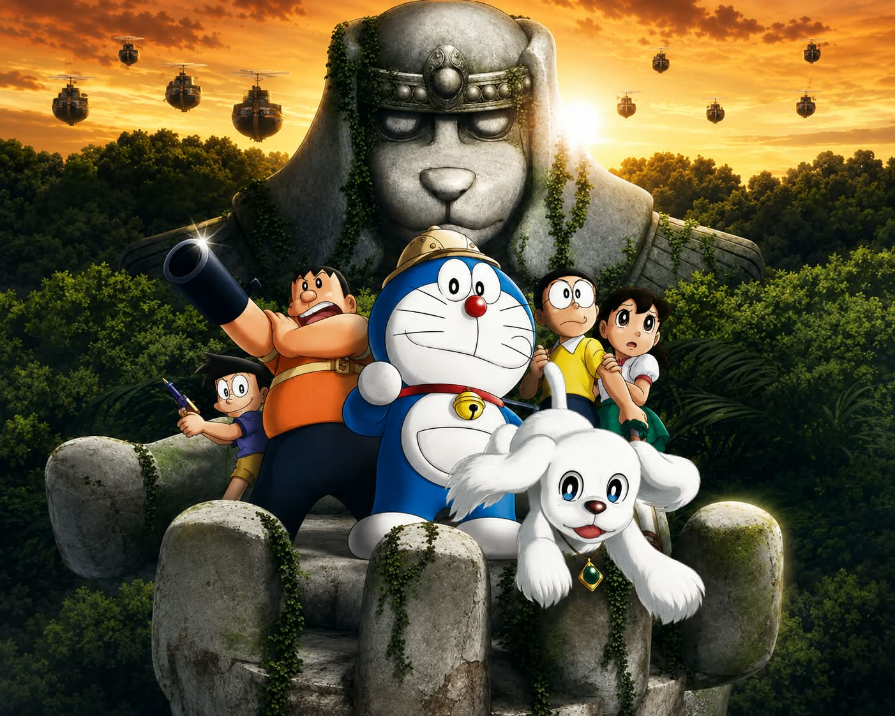

Kisah dunia, cerita, dan petualangan di balik film

Kisah bermula saat Nobita menemukan seekor anjing serangga misterius bernama Peko yang mengarahkan mereka pada kerajaan di dunia paralel. Mereka bertualang untuk menemukan harta karun serta menyelamatkan kerajaan.